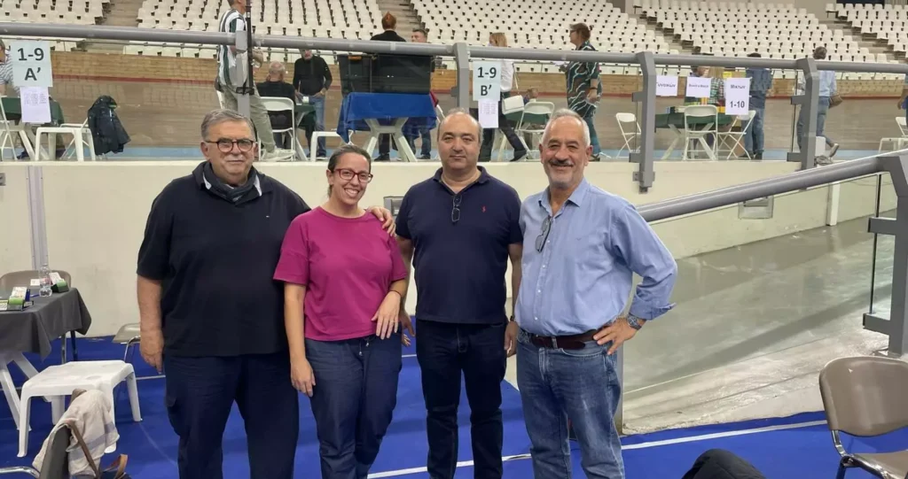
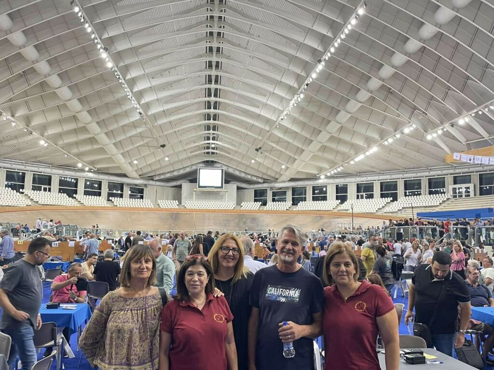

Διακρίσεις του Ομίλου Μπριτζ Ηρακλείου στο Διασυλλογικό Πρωτάθλημα Ομάδων.
Ολοκληρώθηκε την Κυριακή 1 Οκτωβρίου το Διασυλλογικό Πρωτάθλημα Ομάδων που διεξήχθη σε τρεις ημερίδες και διοργάνωσε η Ελληνική Ομοσπονδία Μπριτζ στο Στάδιο Ειρήνης & Φιλίας.
Οι αθλητές του Ομίλου Μπριτζ Ηρακλείου Δοκιανάκη Ο, Καχρής Σ, Τζεδάκης Α και Τσουκάτος Ε. κατέκτησαν την πρώτη θέση στην κατηγορία 1-9.

Οι αθλητές Καραμανώλη Ε, Κελαράκη Μ, Κοτσιφάκη Γ, Πολύζος Γ. και Στεφανίδου Ε κατέκτησαν την δεύτερη θέση στην κατηγορία 1-6 ενώ

Οι μαθητές του ομίλου Κιούλπαλης Ι, Κουμάκης Σ, Μανουράς Ε και Πετράκης Α κατατάχθηκαν στην τέταρτη θέση.
Ο Όμιλος Μπριτζ Ηρακλείου θα ήθελε να συγχαρεί την Ελληνική Ομοσπονδία Μπριτζ για τη διοργάνωση, παρά τις αντιξοότητες, καθώς και όλους τους αθλητές του για τη συμμετοχή τους.
Οι δραστηριότητες του ΟΜΗ υποστηρίζονται από τη ναυτιλιακή εταιρία ΑΝΕΚ LINES & BLUESTAR FERRIES, καθώς και από τον Δημοτικό Οργανισμό Προσχολικής Αγωγής − Φροντίδας και Μαζικής Άθλησης Ηρακλείου (ΔΟΠΑΦΜΑΗ).